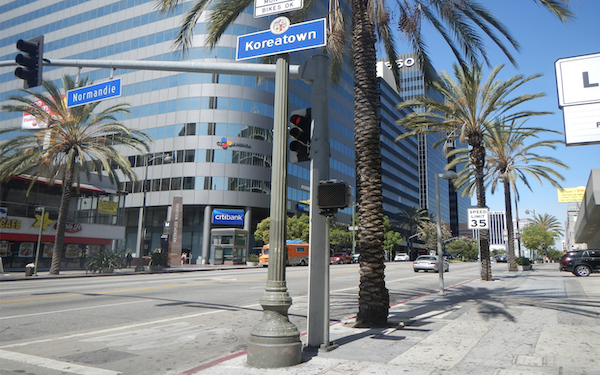
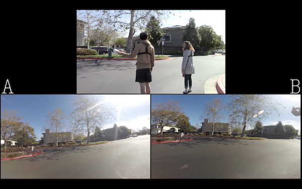
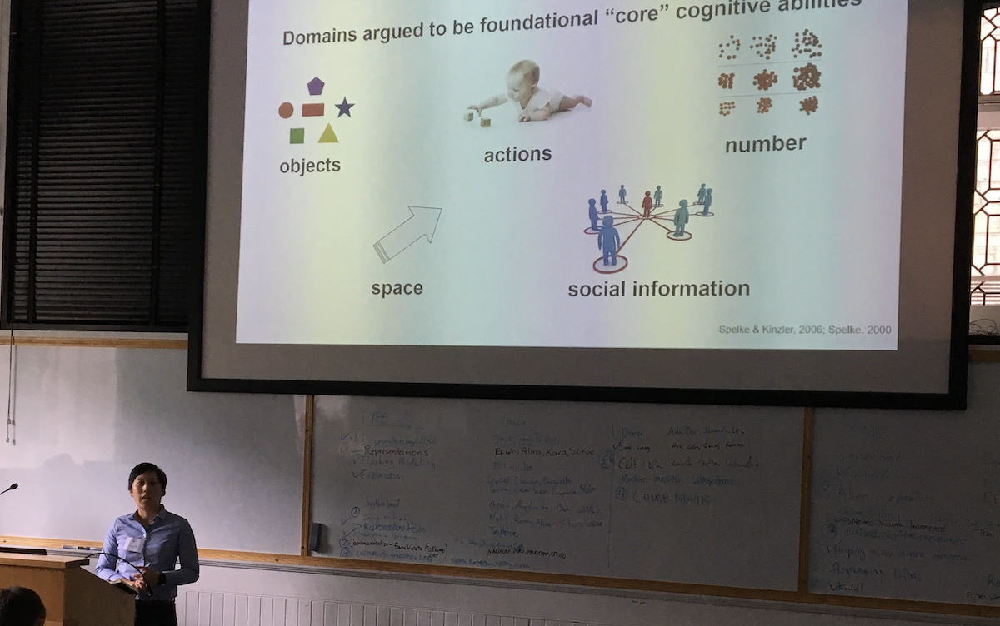

Dr. Crystal Bae is Assistant Instructional Professor of Geographic Information Science in the Center for Spatial Data Science at the University of Chicago since 2021. She holds a Ph.D. in Geography from the University of California, Santa Barbara and was formerly a Postdoctoral Researcher working with Somayeh Dodge in the MOVE Lab on Geographic Visualization and Spatial Cognition. Her research interests are in the areas of spatial cognition, wayfinding and navigation, geovisualization, travel behavior and mobility, and the urban built environment.
Academic
For an updated list of publications and projects, refer to Dr. Bae's Curriculum Vitae or get in touch by email.
Geographic visualization of movement patterns and interaction
Evaluating the cognition of movement behavior through static and animated geographic visualizations, to compare spatio-temporal visualization methods for mapping movement patterns and interaction between individuals.
This work is with Somayeh Dodge and Evgeny Noi on the NSF-funded project “Visualizing Motion: A Framework for the Cartography of Movement”.
Publication: Dodge, S., Toka, M., & Bae, C. J. (2021). DynamoVis 1.0: an exploratory data visualization software for mapping movement in relation to internal and external factors. Movement Ecology, 9:55: 218–240. [link]
Collaborative wayfinding in real-world environments
Behavioral study of dyads performing a situated navigation task, employing Conversation Analytic (CA) methods for video-recordings of planning and navigation processes.
Publication: Bae, C. J. & Montello, D. R. (2019). Dyadic Route Planning and Navigation in Collaborative Wayfinding. 14th International Conference on Spatial Information Theory (COSIT 2019). [link]
Conversation Analysis work "Suggestion Sequences during Route Planning" [link] also presented as Workshop Paper at the Conference on Spatial Information Theory (COSIT) in September 2019.
Preliminary results discussed at the Interdisciplinary Navigation Symposium (iNAV) in June 2018, and at Spatial Cognition conference in September 2018 (poster available on Open Science Framework).
Cognitive boundaries of urban neighborhoods
Project surveying residents in Koreatown, Los Angeles to measure variation in cognitive boundaries of the neighborhood, with a focus on spatial representations, ethnic identity, transportation, and activity spaces.
Publication: Bae, C. J. & Montello, D. R. (2018). Representations of an Urban Ethnic Neighbourhood: Residents' Cognitive Boundaries of Koreatown, Los Angeles. Built Environment, 44(2), 218-240. [link]
Thesis: "Representations of an Urban Neighborhood: Residents’ Cognitive Boundaries of Koreatown, Los Angeles" [link]
  
Teaching
For the most up-to-date teaching history, refer to Dr. Bae's CV: Curriculum Vitae
Certifications and Recognition:
Certificate in College and University Teaching (CCUT), awarded Winter 2020
Designed ArcGIS Online labs for Urban Geography course at UCSB, published in ArcUser as "ArcGIS Online Simplifies Lab Lessons" [link], Winter 2020
Summer Teaching Institute for Associates (STIA) Certificate, completed Summer 2015
UCSB Geography Excellence in Teaching Award, awarded Spring 2016
As Assistant Instructional Professor at UChicago:
patial Cognition, Spring 2022
Introduction to GIS & Spatial Analysis, Spring 2022
Cartographic Design and Geovisualization, Winter 2022
Social Science Inquiry: Spatial Analysis II, Winter 2022
Geographic Information Science I, Autumn 2021
As Instructor of Record at UC Santa Barbara:
Urban Geography, Upper Division Course, Fall 2016
People, Places, and Environment (Introduction to Human Geography), Lower Division, Fall 2015
Behavioral Geography, Upper Division, Summer 2015
As Teaching Associate (TA):
Maps and Spatial Reasoning
Scientific Research Methods in Geography
Urban Geography
People, Places, and Environment
Geography of the United States
Environmental Perception and Cognition
Technical Issues in Geographic Information Systems
Personal
KCSB Community Radio:
Hosted a world music show on 91.9 KCSB-FM in Santa Barbara called The Subverse (Summer 2018 and 2019), featuring various sub-genres of music weekly. You can find my playlists on Spinitron. Also co-hosted a regional jazz music show called Footprints of Giant Steps for several quarters.
Travel Blog:
Wrote a blog called Aesthetics of Everywhere sharing travel narratives, including my cross-country bicycle tour in the summer of 2013 and solo explorations around Southeast Asia in the summer of 2010.
Other Interests:
My main interests outside of academia include drumming, bicycling and bike touring, hiking and backpacking, modern and postmodern literature, poetry, photography, and urbanism.